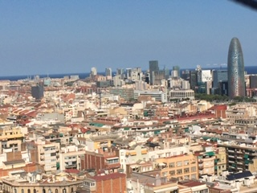
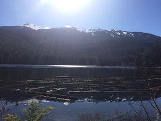
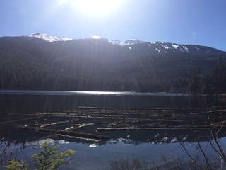
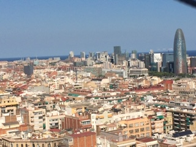
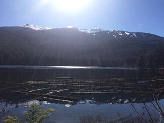

Photos
Here are some photos from my travel!
Here you can see photos from places I have traveled to!
 

Barcelona Puerto Vallarta Whistler
Hi, my name is Kendall Hall! I am going to be a junior at San Ramon Valley High School in the fall. I enjoy traveling and playing tennis. Here on my website you will be able to see my favorite places and get travel recommendations!
Here are some photos from my travel!
Here you can see photos from places I have traveled to!


One of my favorite places to visit is London! I recommend going to London for a week. Some of my favorite things to do are go to the Tate Modern, the Victoria & Albert Museum, and walk through Shoreditch neighborhood.The Tate Modern is a modern art museum. I loved walking through the musuem looking at all of the different art. One cool thing to do is go to the top of the musuem and go out on to the balcany. There you can see an amazing view of London.
Click here for travel reviews!